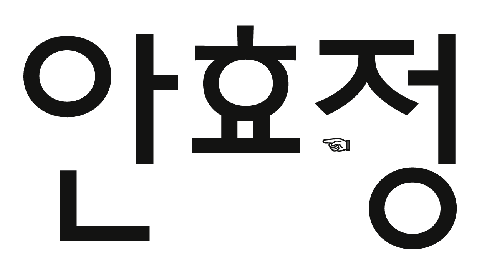
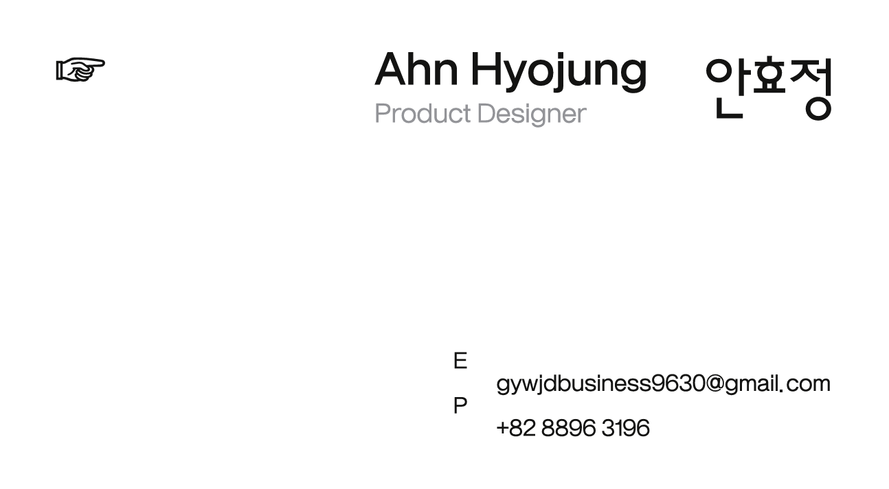
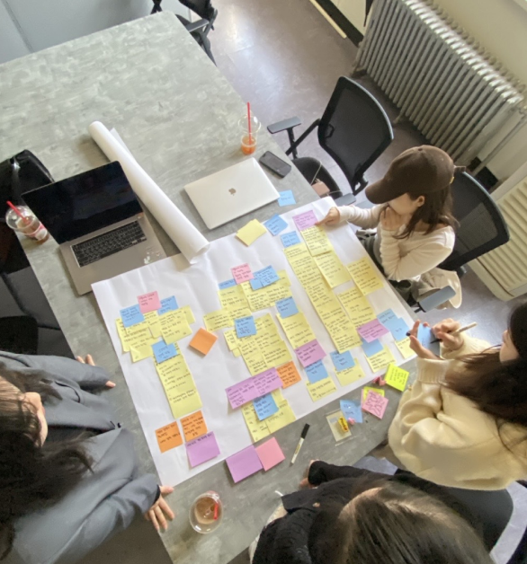
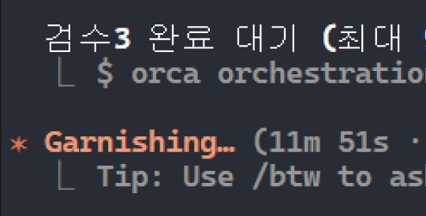
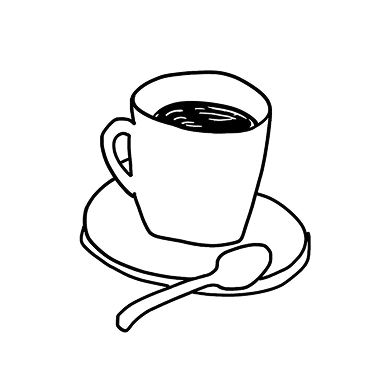

흩어진 유입 접점을 하나의 전환 흐름으로
연결한 에이스카운터 온라인 유입 경험 설계
NHN DATA



NHN DATA


일하는 순서는 늘 비슷합니다. 원인을 먼저 정의하고,
반복되는 작업은 규칙으로 바꿉니다. 그리고 설계한 것이
배포되는 데까지 함께 갑니다. 덕분에 다시 그리는 일과
반복되는 손이 줄어들고, 그만큼 팀의 시간이 남습니다.
One Layer Deeper
product/uxui designer




Let's go one layer deeper together
커피챗은 언제나 환영입니다!
